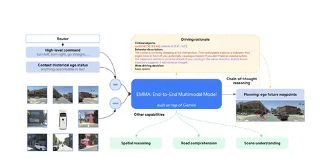
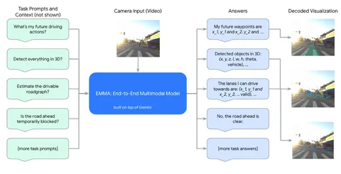

Сегодня разберём статью об EMMA — end-to-end модели на основе LLM для задач автономного вождения.
Верхнеуровнево архитектуру EMMA можно рассмотреть на схеме. В качестве LLM авторы используют Gemini. На входы модели подают изображения с камер (camera-only), историю ego и подсказки маршрутизатора. HD-карты не используются.
Chain-of-thought начинается с описания сцены (scene description), потом модель выделяет участников движения (critical objects) и переходит к описанию их поведения (behavior description of critical objects). А в конце — принимает решение, как управлять транспортным средством (meta driving decision).
Задачи перспешна (3D object detection, road graph estimation, scene understanding) решает Gemini — по изображениям с камер и соответствующим им промптам. Чтобы выбрать лучшую моду, модель считает попарные L2-расстояния между всеми траекториями. Топ-1 становится траектория с наименьшим средним L2.
Из плюсов EMMA — неплохие значения ADE по сравнению с Wayformer и MotionLM. Но недостатков у модели много:
EMMA — один из примеров того, как можно применять LLM для задач автономного вождения, выбивая при этом неплохие значения метрик open-loop. В целом, end-to-end подходы набирают всю большую популярность. Думаю, дальнейшие исследования будут направлены на преодоление вычислительных ограничений и внедрение симуляции сенсоров в closed-loop.
Разбор подготовил
404 driver not found

